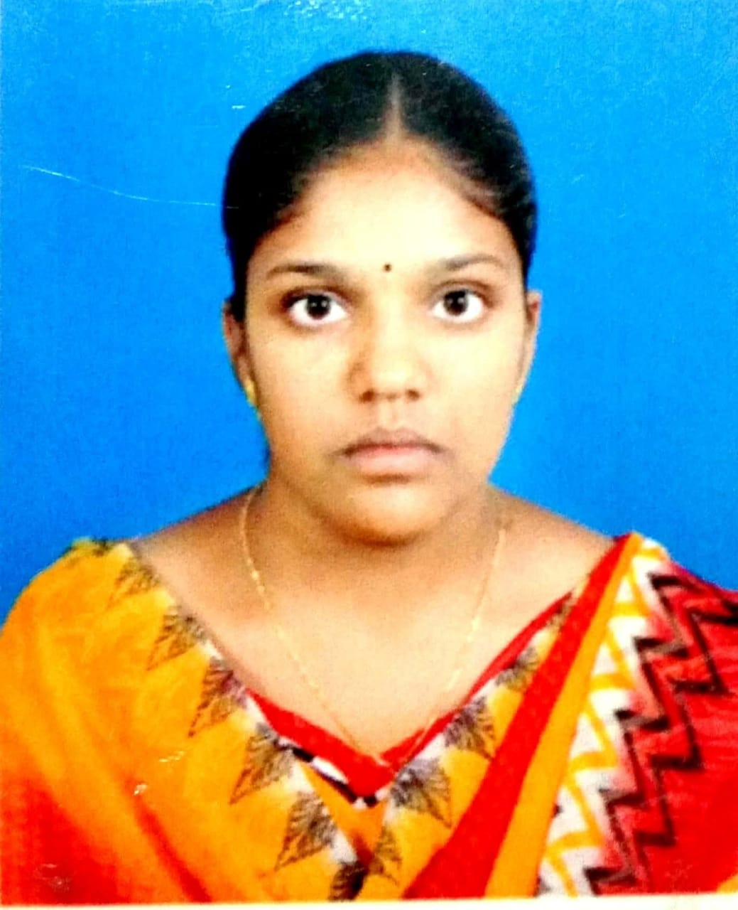

Store Manager equipped with extensive experience in automotive sales management. Employs excellent leadership skills and multi-tasking strengths.Demonstrated ability to improve store operations,increase top line sales,reduce costs.
Hightlights
Results Oriented
revenue generation
Business development
Resistence to stress
Good maneners
Education
Bachelor of science: Automotive Technology-2014 Technical Institute,NY